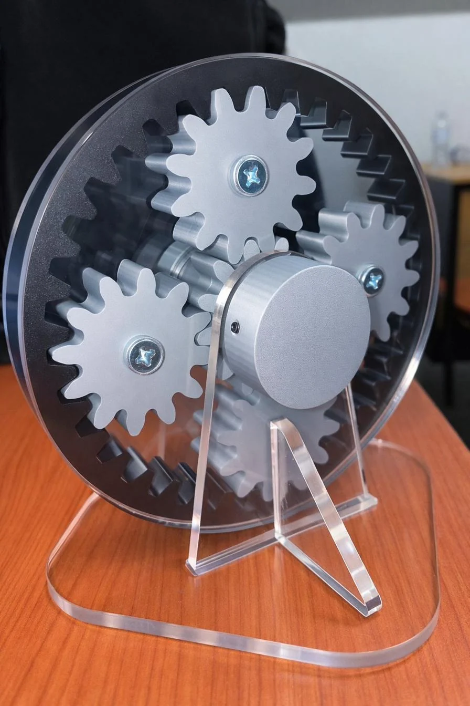
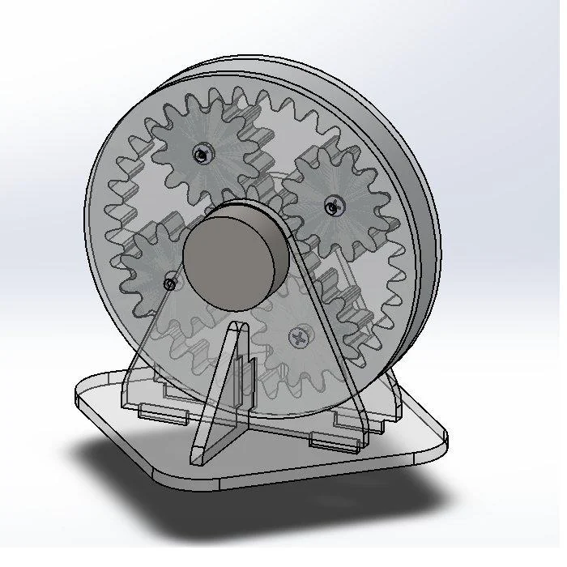
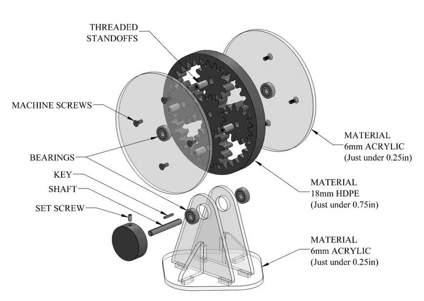
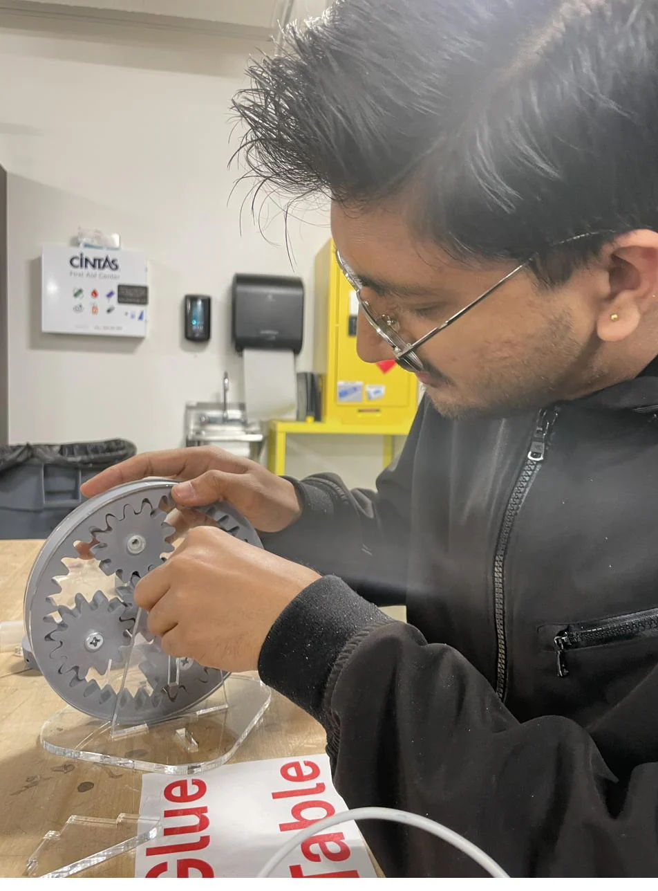

CAD · Fabrication · BYU–Idaho
4:1 Planetary Gearbox
I designed a 4:1 planetary gearbox in SolidWorks and built a hand-cranked assembly with PETG gears and an acrylic housing. The build included an exploded-view drawing, a bill of materials, and a correction for fastener clearance.

Key Specs
| Role | Solo |
| Scope | 12 parts — 12T sun, three 12T planets, 36T ring · 5–6 design iterations |
| Materials | PETG gears (3D printed) · laser-cut acrylic housing |
| Key spec | 4:1 reduction; ideal calculated output 2.44 N·m from 0.61 N·m input, before losses. Output torque not measured. |
| Verification | Hand-cranked fit and mesh check; fastener interference found and corrected with a countersunk chamfer |
| Deliverables | Working assembly, exploded-view drawing, BOM |
What I built
The gearbox uses a 12-tooth sun, three 12-tooth planets, and a 36-tooth ring. With the ring fixed, the sun-to-carrier tooth-count relation gives a 4:1 reduction. I designed the parts and assembly in SolidWorks, then produced the physical build and its drawings.

Design constraints
The gear module, center distances, and carrier positions had to agree across both meshes. I also needed enough clearance for the shafts and fasteners so the printed assembly could turn without binding.
Fabrication and fit checks
I modeled and mated the components in SolidWorks, then printed the gears in PETG and laser-cut the acrylic housing. The design went through five to six iterations. Hand-cranking the assembly exposed screw heads that interfered with the carrier; I revised the holes with countersunk chamfers.

Results and limitations
The finished assembly passed my hand-cranked fit and mesh check. The ideal torque calculation is 0.61 N·m input × 4 = 2.44 N·m output, before mechanical losses. I did not measure delivered torque. The most useful lesson was to include fastener-head clearance in the CAD review rather than waiting for assembly to expose it.
